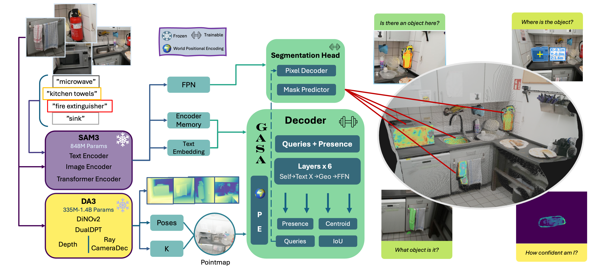
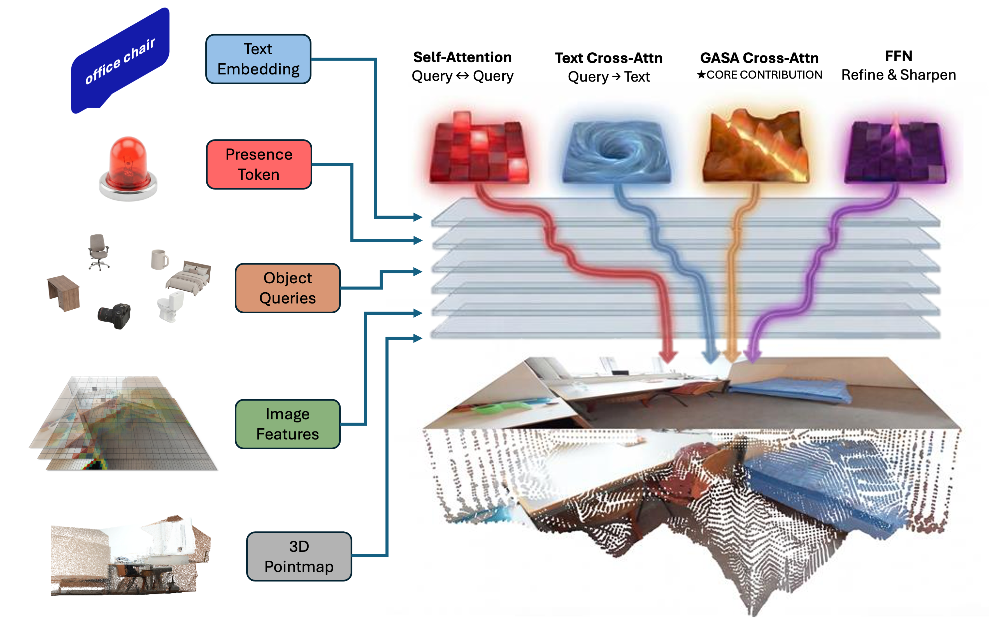

Abstract
Localizing objects and parts from natural language in 3D space is essential for robotics, AR, and embodied AI, yet existing methods face a trade-off between the accuracy and geometric consistency of per-scene optimization and the efficiency of feed-forward inference. We present TrianguLang, a feed-forward framework for 3D localization that requires no camera calibration at inference. Unlike prior methods that treat views independently, we introduce Geometry-Aware Semantic Attention (GASA), which utilizes predicted geometry to gate cross-view feature correspondence, suppressing semantically plausible but geometrically inconsistent matches without requiring ground-truth poses. Validated on five benchmarks including ScanNet++ and uCO3D, TrianguLang achieves state-of-the-art feed-forward text-guided segmentation and localization, reducing user effort from clicks to a single text query. The model processes each frame in 107ms (9 FPS) without optimization, enabling practical deployment for interactive robotics and AR applications.

Figure 1. Overview of the TrianguLang architecture.

Figure 2. Overview of the GASA decoder.
Qualitative Results
TrianguLang uses predicted geometry from DA3-NESTED to jointly estimate metric depth and camera intrinsics/extrinsics from the input images alone, enabling deployment on uncalibrated camera systems and multi-camera setups without requiring SLAM or structure-from-motion (SfM) preprocessing.
TrianguLang operates in a single-prompt setting: the language query is provided once and propagated across all views through geometric reasoning, reducing user effort from clicks to text input.

Figure 3. Segmentation results on the ScanNet++ dataset.

Figure 4. Qualitative comparison of results on the LERF_OVS dataset.
Figure 5. Full array of results on the NVOS T-Rex scene. The bottom panel showcases TrianguLang's spatial reasoning ability, achieved through simple text modifiers.
References
Acknowledgements
We would like to thank NVIDIA and NSF for their support, without which this research would not have been possible.
Website template adapted from Nerfies.